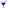

Gastronomie
OpenStreetMap
Die meisten Daten stammen von OpenStreetMap (OSM). Diese werden mindestens quartalsweise europaweit durch TYDAC aufbereitet. Stellen Sie Fehler fest, machen Sie mit beim Crowdsourcing, werden Sie einfach OSM Mapper! Klicken Sie hier und wählen Sie Start Mapping.
Legende und Angaben zur Datenaktualität
| Restaurants
Datenquelle: OSM Nachführung: Wöchentlich |
|
| Berggasthäuser Datenquelle: TYDAC und Alternatives Wandern Nachführung: Keine, Meldungen bitte an TYDAC (info@tydac.ch) |
|
| Fastfood Datenquelle: OSM Nachführung: Wöchentlich |
|
| Bars Datenquelle: OSM Nachführung: Wöchentlich |
|
| Brauereien Beer Me! Datenbank Datenquelle: Beer Me! Datenbank (Ihre Lieblingsbrauerei können Sie dort erfassen ...) Nachführung: Täglich |
|
| Biergärten Datenquelle: OSM Nachführung: Wöchentlich |
|
| Pubs Datenquelle: OSM Nachführung: Wöchentlich |
|
|
 |
Nachtclubs Datenquelle: OSM Nachführung: Wöchentlich |
Cafés Datenquelle: OSM Nachführung: Wöchentlich |
Eisdielen Datenquelle: OSM Nachführung: Wöchentlich |